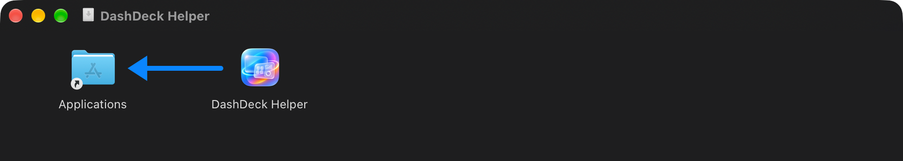
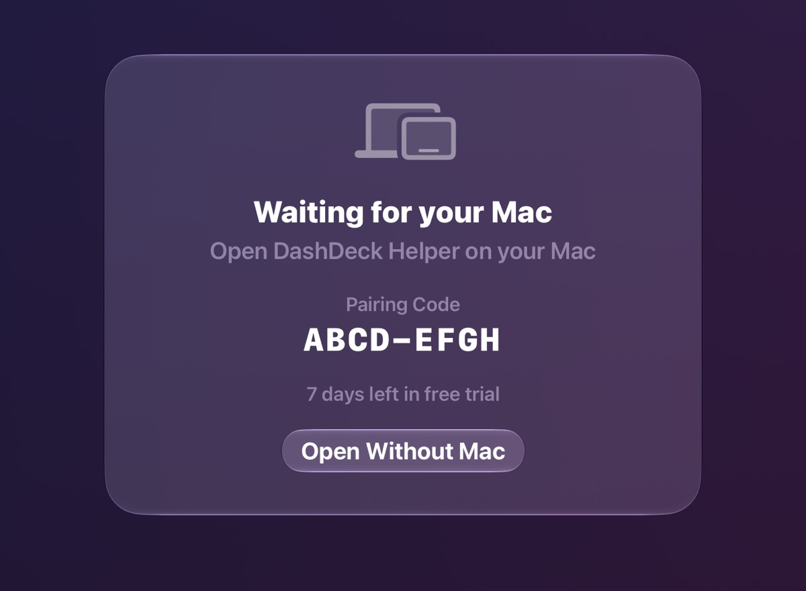
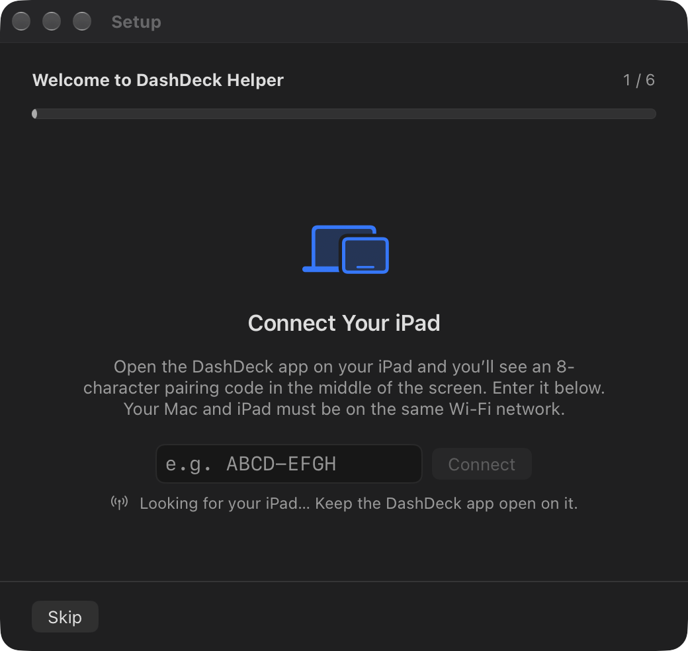
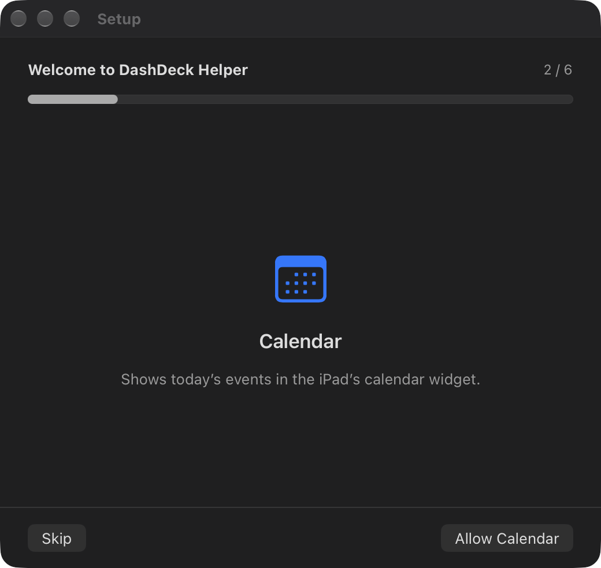
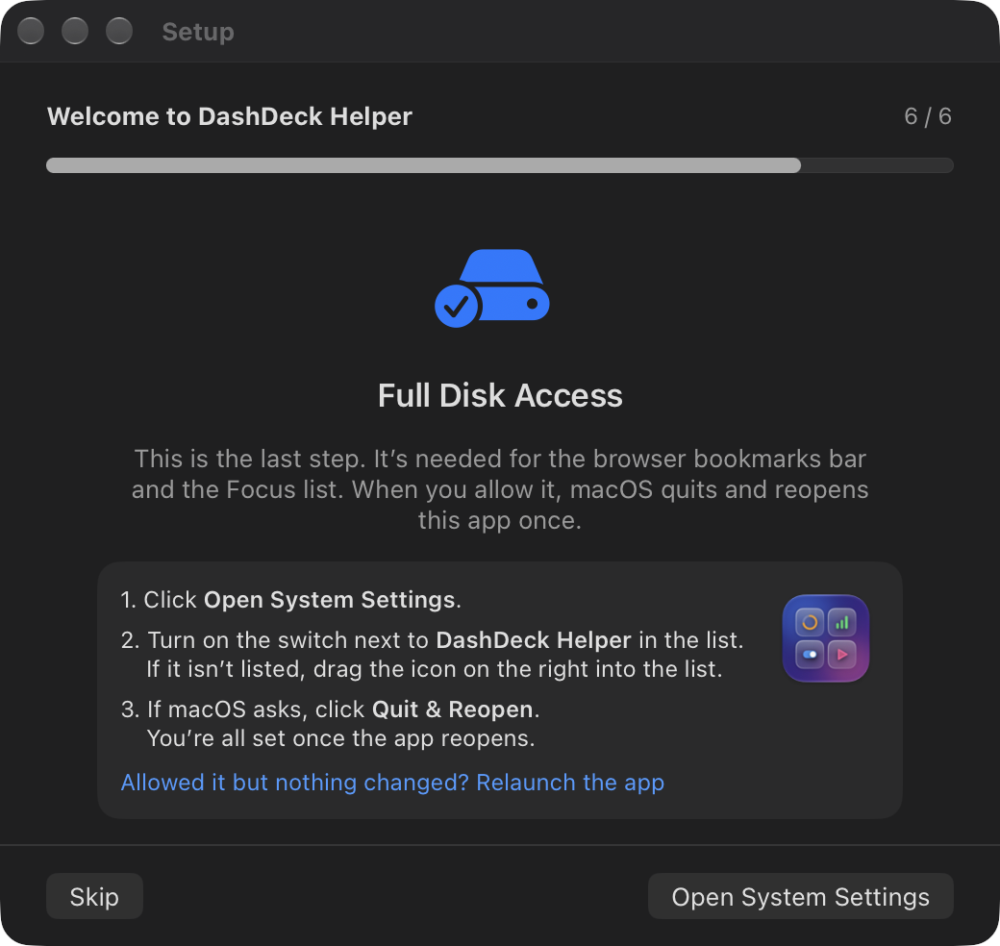
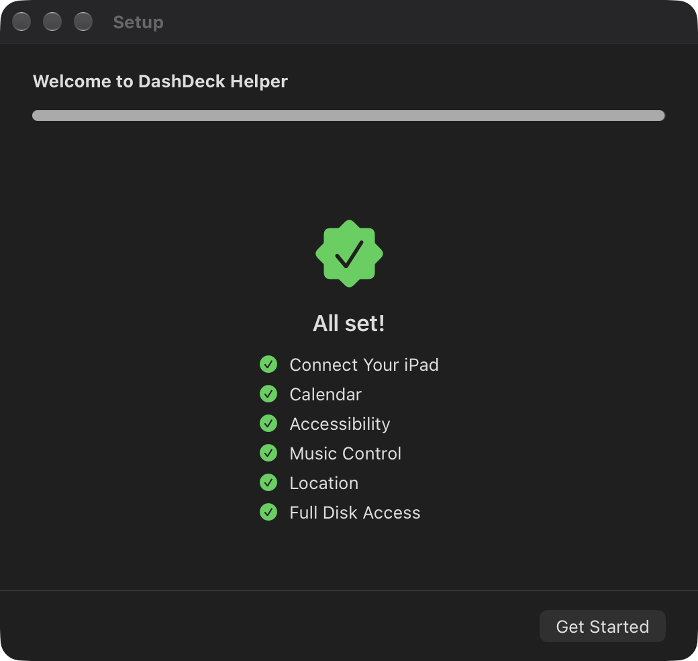

What it does
DashDeck puts your Mac's apps, files, music, system status and quick controls on the iPad sitting next to it. It has two parts: the DashDeck app on your iPad and the free DashDeck Helper on your Mac. They talk to each other directly over your own network — there is no account and no cloud service.
Read the full User Guide → every screen, widget and setting explained.
Get DashDeck Helper for Mac
Download DashDeck Helper
Free. Requires macOS 14 or later. Step-by-step instructions with pictures are below.
Set up, step by step
Takes about 3 minutes. Your Mac and iPad must be on the same Wi-Fi network (or connected with a USB cable).
1Install DashDeck Helper on your Mac
Click Download DashDeck Helper above, open the downloaded DashDeckHelper.dmg, and drag DashDeck Helper onto the Applications folder.

2Open DashDeck Helper
Open it from the Applications folder (or Spotlight). The first time, macOS asks whether to open an app downloaded from the internet — click Open. The app is signed and notarized by Apple. A DashDeck icon appears in the menu bar and a setup window opens in the middle of the screen. From then on it starts automatically when you log in.
3Open DashDeck on your iPad
An 8-character pairing code appears. If the iPad asks to find devices on your local network, tap Allow.

4Type the code into the Mac
Type the 8 letters into the setup window and click Connect (the dash is added for you). Within a few seconds the iPad shows your dashboard.

5Allow what you want to use
The setup window then asks for one permission at a time and moves on by itself once it's allowed. Every step can be skipped — you can come back later from Run Setup Again in the settings window.
- Calendar — your Mac's events in the calendar widget.
- Accessibility — export progress from video editing apps.
- Music Control — the music page and play/skip buttons.
- Location — nearby Wi-Fi names in the control strip (macOS treats them as location).
- Full Disk Access (last) — your browser bookmarks bar and the Focus list. macOS quits and reopens the Helper once after you allow it; that's expected.


6Done
Click Get Started. Your Mac's apps, files, music and status are now on the iPad.


FAQ
The iPad keeps saying "Waiting for your Mac".
Make sure DashDeck Helper is running on your Mac and both devices are on the same Wi-Fi network.
On the iPad, check that Settings → DashDeck → Local Network is on.
Why does the Helper ask for Full Disk Access?
macOS protects the files where browsers keep bookmarks and where Focus modes are listed. The Helper reads
only the bookmarks bar and the Focus list. You can skip this and everything else still works.
The bookmarks bar is empty.
Tap Import on the bookmarks bar and choose Safari or Chrome. If your Mac needs permission, a guide opens on the Mac.
Which videos can I play from my Mac?
MP4 and MOV files play directly on the iPad. Other formats (MKV, AVI) can be opened on the Mac with a double-tap.
What is free and what is Pro?
Everything is free for 7 days. After that, the iPad-only widgets (clock, weather, notes, timer, reminders, health) stay free,
and features that connect to your Mac need DashDeck Pro: a monthly or yearly subscription, or a one-time lifetime purchase.
How do I cancel a subscription?
On your iPad, open Settings → your name → Subscriptions.
The menu bar icon is missing.
Open DashDeck Helper again from Applications or Spotlight and the settings window appears.
Contact
ngh723@gmail.com — Please include your macOS and iPadOS versions.